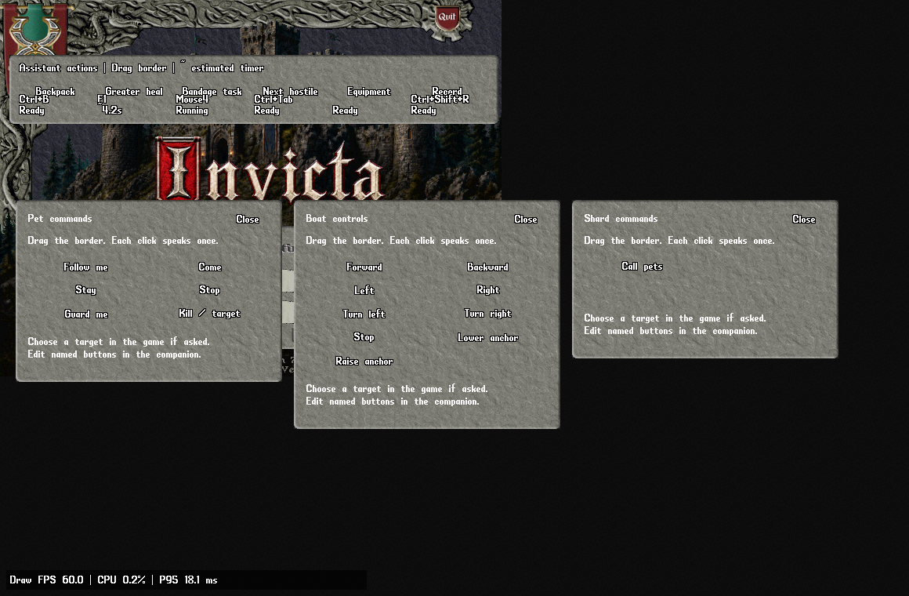

Healing, hands and game command panels
Choose a named patient and a healing method in the separate assistant. Use small pet, boat and custom command panels inside the game when you want a quick button.
This guide covers UO Assistant 0.7.0. Use Find a tool to find Healing, Patients & pets, Casting & convenience, Targeting & aliases, Commands, Hotkeys or Bindings & actions. The assistant stays in its separate window; the three command panels are ordinary movable game windows.
Heal your pet once
- Open Healing under Character / Health & pets. In Who to heal, choose A controlled pet.
- Choose the pet by name in Choose your pet, or click Choose pet in game and select that pet in the game. Selecting a pet requests its status. It does not cast or use a bandage.
- Wait until the status shows the pet's health. Use Refresh chosen pet's health if its health or control information is still missing.
- Choose Bandages, Heal spell, Greater Heal spell or Cure poison spell in Heal using.
- For healing, set Heal below health (%). Move into range and check the explanation below the controls. Click Heal once when it says the patient is ready.
The patient you chose is the one used for that request. Selecting a different row in a patient table does not silently change the patient. Changing the visible pet choice applies to the next heal; Save healing settings remembers the setup for the next launch.
Choose the right method
| Method | What to check |
|---|---|
| Bandages | Keep matching bandages in a loaded, accessible bag you own. They must be unprotected by your item rules. Bandages reach at most two tiles. |
| Heal spell | A normal Heal request for the selected patient. Keep enough mana and use the range set for your patients. |
| Greater Heal spell | A Greater Heal request for the same selected patient. Mana, spell availability and the result follow your shard's rules. |
| Cure poison spell | Use this for a patient whose poison status is known to be poisoned. Cure can be requested at full health. The health percentage threshold is not used for curing. |
| Custom spell (advanced) | Retains configurable spell numbers and shard-specific settings. Use a spell listed by this client and supported by your shard. Unsupported saved numbers are retained but cannot start healing. The assistant will not consume a harmful target as a healing target. |
A healing threshold is strict: at a 90% setting, 90/100 health needs no heal; 89/100 is below the threshold. Unknown health is shown as unknown. Normal healing does not attempt resurrection.
Spell patient range is configurable from one to twelve tiles under Patients & pets / Advanced patient settings & object IDs. Bandages remain limited to two tiles. The server still checks line of sight and its own range rules.
Keep a healing watch running
- Choose the patient, method, health threshold and Wait between heals (seconds).
- Check Advanced healing settings if you want to change minimum spell mana, poison handling, pause-while-walking or the watch time limit. Shard-specific bandage timing formulas remain in the timing tools.
- Click Start healing watch. The status explains whether it is waiting for health, range, mana, an available item or the configured cooldown.
- Use Stop healing to end this watch, or the window's Stop all to stop the current task. Starting the application or saving settings never starts a watch.
A watch uses the choices captured when you start it. Stop it before choosing a different patient or method. It ends at its shown time limit. Read-only patient refresh and opening a command panel remain available while a watch runs.
The wait between requests is a local estimate. Stopping and restarting does not make an already requested bandage or spell ready immediately. A request can still be refused by the shard: use the game and journal to check recovery, poison, interruption and cooldown messages.
Manual targets and target-producing actions have priority. For example, using an all-kill command while healing waits for its cursor stops the healing attempt instead of letting it consume your pet-command target. Finish your manual action before starting healing again.
Heal yourself or a patient list
Choose Myself to heal your character. For more than one patient, open Patients & pets, use Choose and add patient in game, Add saved friends or Add loaded party members, then click Use my patient list for healing. Adding a row alone does not start healing or switch the healing mode.
The list chooses an eligible patient with the lowest known health percentage. After a cast or item use starts, it keeps that patient through the target step. It never changes that target halfway through because someone else becomes more injured.
Some shards do not report the control information used by the controlled-pet picker. You can explicitly add that pet as a patient and choose My patient list once its health is known. This records your chosen patient; it does not claim ownership or change who the shard allows you to heal.
Use Save patient preset to keep the list, target mode and range for the next launch. Saved patients that leave the loaded area remain identifiable and can be selected again when they return.
When healing is waiting
| Status | Next step |
|---|---|
| Waiting for pet or health information | Select the pet in game or refresh its health. Wait for the shard's reply. If the shard does not identify controlled pets, use an explicitly chosen patient list. |
| Patient outside range or loaded area | Move closer. Use two tiles or less for bandages; check the saved patient range for spells. |
| At or above the healing threshold | No healing is needed at the configured threshold. A watch waits for health to fall below it. |
| Poisoned patient is skipped | Choose Cure poison spell, or review the advanced poison setting appropriate for your shard. |
| No matching bandages | Open the bag containing your bandages, check their graphic in advanced settings if your shard changes it, and check your protection rules. |
| Finish the current target or held item | Complete or cancel the game cursor and put down the held item. Your manual action keeps priority. |
| Moving or planning a path | Stop walking, or deliberately change the pause-while-walking setting. |
| Cooldown, low mana or no fresh healing target | Wait for the shown local delay, recover mana or check the game journal. A missing target stops the attempt without repeatedly recasting. |
Free your hands and recover your weapon after casting
Open Character / Equipment / Casting & convenience. Your current game choices load into the form. Opening the tool makes no changes. Choose Save & apply convenience when you want to remember these choices for the selected shard profile. Load current game choices reloads the form without saving it.
- Enable Free my hands before casting if your shard requires empty hands. For your next manual spell or spell hotkey, the client moves each original hand item into your backpack and waits until that move is reported before requesting the spell once.
- Enable Restore my weapon and shield after casting to request the same original items after a completed spell cycle. For a targeted spell, the actual target must have been sent and casting must have settled. A small set of ordinary spells without targets uses observed casting animation and mana spending instead.
- Under Advanced hand timing, adjust Hand action delay (seconds) if needed. The default is 0.6 seconds; the allowed range is 0.1 to 5 seconds. A shorter delay never replaces waiting for the shard's item update.
These helpers apply to explicit native or companion spell use. Healing watches, scripts and macro sequences keep their existing equipment behavior. Restoration never equips an old remembered loadout when you deliberately started the cast empty-handed.
A new spell, manual item move, replacement target, death, disconnection, Stop all or Escape stops pending hand work. Newly equipped gear is preserved. Original items must still be known, accessible, unprotected and unchanged; the client makes one request per item and waits for the equipment update rather than repeatedly sending it.
If a spell fizzles, is cancelled or has no confirmed completion, your hands can remain in the backpack. Use the normal game equipment controls, or use Remember current hands before clearing them and Restore remembered hands afterwards. This separate memory lasts for the current character session and restores only those exact items. Both actions can be assigned to a key or action-bar slot. Your shard still decides whether each move or equip succeeds.
Use an ordinary potion with occupied hands
In Casting & convenience / Ordinary potions, enable Free my hands before using an ordinary potion. A manual potion click or hotkey then clears the original hands, waits for the backpack updates and uses that potion once. Enable Put my original weapon and shield back after the potion to request recovery after the potion stack is observed to decrease or disappear.
This applies only to the configured ordinary, non-throwing potion graphics. The default list excludes explosion potions. Use Advanced potion types only when your shard uses different graphics; an empty list disables this helper. Potion recovery requires the hand-clearing option. A missing result or timeout leaves the original items where they are, with no repeated drink request.
Choose existing game conveniences
The same tool exposes nearby automatic doors, automatic corpses at one to three tiles, fast rotation, the target range indicator and accidental dismount prevention during war mode. It also offers incoming names, overhead health, damage per second, buff time and bar, and spell words and names. Save only the choices you want. Current game options are retained until the first explicit save; fast rotation changes turning behavior and does not increase server movement speed.
Automatic hand preparation, restoration, doors and corpse access still follow the shard's assistant permissions. Disabled features are refused or kept inactive. Health, damage and buff displays depend on information the shard supplies.
Keep useful last targets separate
Open Targeting & aliases. Enable Remember harmful and beneficial last targets separately to keep separate last targets for the current server cursor type. A neutral cursor uses the general last target. Enable the range check and set Maximum target distance (tiles) from one to twenty-four tiles to keep last-target requests within your chosen distance. Click Save & apply targeting choices to apply these independent profile choices.
Avoid Heal and Greater Heal on poisoned targets checks a fresh Heal or Greater Heal cursor against known target facts. It keeps the cursor when the target is poisoned or its health or poison information is unknown. It does not change Cure, consume a different target, or silently pick another patient. The target must still be loaded, and the shard checks line of sight and its own rules.
Open pet, boat and custom controls in the game
Open Controls / Commands in the companion. Click Open pet controls, Open boat controls or Open custom controls. Drag a panel by its border. Close it using Close or a right-click. Panels close when the character session, connection or map changes; reopen the panel you need.

| Panel | Starting buttons |
|---|---|
| Pets | Follow me, Come, Stay, Stop, Guard me and Kill / target. These send the corresponding all command. Kill leaves target selection to you in the game. No release-pet button is included. |
| Boats | Forward, Backward, Left, Right, Turn left, Turn right, Stop, Lower anchor and Raise anchor. |
| Custom | A starting Call pets button sends .sacall, as an example of a user-chosen shard command. Edit it to match your shard. |
Each click sends one ordinary speech request. The game does not repeat the click on a timer, select a target, confirm pet ownership or assume the boat or pet responded. Use the command words that your shard recognises.
Create a named shard command
- In Controls / Commands, choose the Pets, Boats or Custom panel.
- Click New button. Enter a Button name and the exact Command to say. For example, name it Call pets and enter
.sacall. - Click Save button. The open native panel updates, but no speech is sent.
- Open the panel and click the named button when you want to use it.
Each panel holds up to 32 buttons, with up to 96 across all three. Button names hold up to 40 characters and command text up to 120 characters on one printable line. The configuration is saved with the selected assistant profile.
Select a row to edit that button. Renaming it keeps its existing button identity and shortcuts. Remove selected button removes its keyboard, mouse and action-bar references. Reset this panel restores that panel's starting buttons and removes its old shortcut references, so assign those again when ready.
Use a key, mouse shortcut or action-bar button
Open Controls / Hotkeys for a keyboard shortcut, or Bindings & actions for the broader keyboard/mouse editor. Choose ExecuteQuickCommand as the action, then choose the saved button by its readable name and command text. Use the same named choice for an action-bar slot. The selected button's identity is shared by its native panel, key binding and action button; you do not need to type a command number.
You can also bind an action that opens the Pet, Boat or Custom panel. Set the actual shortcut in the binding editor; writing a key label on an action-bar button does not create that binding.
A tap runs once. A Hold binding runs once after 350 milliseconds; it does not repeat while held. Game, Targeting and Chat contexts decide where a shortcut is active. Existing client macro conflicts are reported, ordinary left/right mouse movement remains available, and Ctrl+Shift+A opens the separate assistant.
Command speech is for explicit button or hotkey use. Saved configuration, opening panels, macros and scripts do not automatically speak these commands.